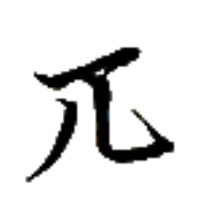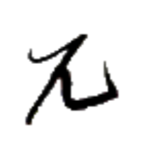
セゥㇳ⤴
【机】
[名詞]
机、足つきの台
机種
セゥㇳ⤴デゥㇳ·
【机種】
[名詞]
セトデト、ステデラフ(人名)
机戦
セゥㇳ⤴カイㇰ·
【机戦】
[名詞]
机戦、セッカイク
声机
スオㇷ゚⤴セゥㇳ⤴
【声机】
[名詞]
（雅語）琴
席机
スィュー⤴セゥㇳ⤴
【席机】
[名詞]
椅子
紙机戦
ニン→セゥㇳ⤴カイㇰ·
【紙机戦】
[名詞]
紙机戦、ニーンセッカイク
閉机戦
イン⤴セゥㇳ⤴カイㇰ·
【閉机戦】
[名詞]
ボードゲームの一種
与学机戦
トゥイ⤴ヌイ⤴セゥㇳ⤴カイㇰ·
【与学机戦】
[名詞]
教育机戦（簡素化されたセッカイク）
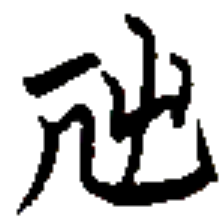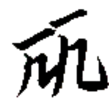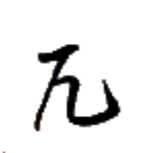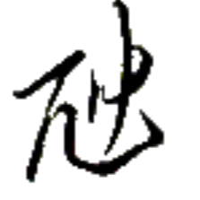
ピュ·
【力】【能】【可】
[副詞]
～できる
[名詞]
〔単独では稀〕力
入力
リㇳ→ピュ·
【入力】
[動詞]
努力する
認力
ヒオウ→ピュ·
【認力】
[動詞＋目的語]
～の実力を認める
我無認汝之力
パイ⤴ムン→ヒオウ→ムアー⤴ア·ピュ·
【我無認汝之力】
私はあなたの実力を認めていない。
皇力
タㇺ⤴ピュ·
【皇力】
[名詞]
皇効（宗教的概念およびセッカイク用語）
水力
ヌアー⤴ピュ·
【水力】
[名詞]
ヌワピユ、ヌヮピュ（人名）
硬力
ペゥㇰ→ピュ·
【硬力】
[状態動詞]
強い
硬皇力
ペゥㇰ→タㇺ⤴ピュ·
【硬皇力】
[名詞]
強い皇効（セッカイクのルール変種のひとつ）
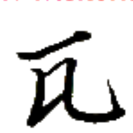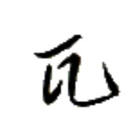
ショウ⤴
【錘】
[状態動詞]
重い
[状態動詞]
重要だ
震錘
ピㇳ→ショウ⤴
【震錘】
[名詞]
振り子
片錘
ツオウ→ショウ⤴
【片錘】
[名詞]
質量の単位（およそ 1.52 kg）
足錘
シー→ショウ⤴
【足錘】
[名詞]
足かせ
ラネーメにおいては抑圧の象徴と考えられることもある。
足錘貧樽
シー→ショウ⤴ヘイ⤴トウ⤴
【足錘貧樽】
[名詞]
人によって何画で書くか差があるような字のこと。
ミㇳ⤴
【軽】
[状態動詞]
軽い
軽赤
ミㇳ⤴コㇰ→
【軽赤】
[名詞]
ピンク
軽青
ミㇳ⤴ヌオㇰ⤴
【軽青】
[名詞]
水色
⇒ p.
噫
スオㇷ゚⤴
【声】
[名詞]
声、音
[略号]
（伝統文法論における）間投詞および文末助詞
声多
スオㇷ゚⤴タウン→
【声多】
[状態動詞]
うるさい、騒がしい
声風
スオㇷ゚⤴プアー⤴
【声風】
[名詞]
知らせ
声机
スオㇷ゚⤴セゥㇳ⤴
【声机】
[名詞]
（雅語）琴
声行
スオㇷ゚⤴モㇰ→
【声行】
[名詞]
声調
言声
チェㇷ゚→スオㇷ゚⤴
【言声】
[名詞]
発音
笛声
ロㇰ→スオㇷ゚⤴
【笛声】
[名詞]
笛の音
軸声
ラー→スオㇷ゚⤴
【軸声】
[名詞]
音節の主母音
周声
セイ⤴スオㇷ゚⤴
【周声】
[名詞]
子音、特に音節末子音
上声
ザウ⤴スオㇷ゚⤴
【上声】
[名詞]
頭子音、音節の最初の子音
直声
ヨウ→スオㇷ゚⤴
【直声】
[名詞]
パイグ語の声調で、高く長く発音するもの
この辞書では「→」で表記される。
歪声
ブㇷ゚⤴スオㇷ゚⤴
【歪声】
[名詞]
パイグ語の声調で、低く長く発音するもの
この辞書では「⤴」で表記される。
無声
ムン→スオㇷ゚⤴
【無声】
[名詞]
パイグ語の声調で、中間の高さで短めに発音するもの
この辞書では「·」で表記される。
待声時
ティㇺ→スオㇷ゚⤴カㇰ·
【待声時】
[名詞]
（パイグ語の文法用語）語境界や意味上の区切れを明示するために用いる発話中の無音区間
筆声字集
クアー⤴スオㇷ゚⤴マン→ダㇳ⤴
【筆声字集】
[名詞]
音写語、音訳語、字から語源を見てとりづらい語
上周声
ザウ⤴セイ⤴スオㇷ゚⤴
【上周声】
[名詞]
頭子音、音節の最初の子音
下周声
ウㇳ⤴セイ⤴スオㇷ゚⤴
【下周声】
[名詞]
音節末子音
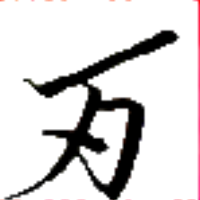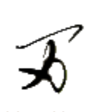
ナー→
【静】
[状態動詞]
静かだ
[副詞]
ゆっくりと
静之
ナー→ア·
【静之】
[副詞]
音を立てずに、そっと
静水
ナー→ヌアー⤴
【静水】
[名詞]
ナナラ（行政区画名）
静水集
ナー→ヌアー⤴ダㇳ⤴
【静水集】
[名詞]
ナナラ郡（アイル共和国の郡名）
小静
ニー→ナー→
【小静】
[状態動詞]
ちまちましている
龍静
ホイ⤴ナー→
【龍静】
[名詞]
バニラ
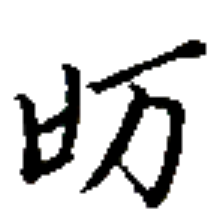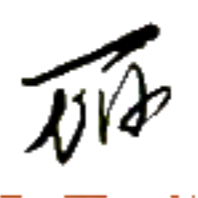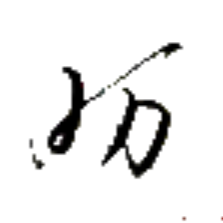
ブㇺ→
【鼓】【皷】
[名詞]
太鼓、小鼓、ドラム
撃鼓
クㇳ⤴ブㇺ→
【撃鼓】
[名詞]
クッブーム詩（定型詩の一種）
煙鼓
ロウ→ブㇺ→
【煙鼓】
[名詞]
通信
煙鼓無色
ロウ→ブㇺ→ムン→ポㇰ·
【煙鼓無色】
[四字熟語]
通信状況が悪い
琴笛鼓歌
リアー→ロㇰ→ブㇺ→シャウ→
【琴笛鼓歌】
[名詞]
弦楽器・管楽器・打楽器による伴奏がついた歌
シャウ→
【歌】
[動詞]
歌う、歌を歌う
[名詞]
歌
琴笛鼓歌
リアー→ロㇰ→ブㇺ→シャウ→
【琴笛鼓歌】
[名詞]
弦楽器・管楽器・打楽器による伴奏がついた歌
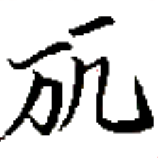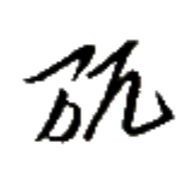
タイ·
【咍】
[文末助詞]
なんとまあ、おや、あらあら
[間投詞]
なんとまあ、おや、あらあら
強い感情を表す。
⇒ p.
琴
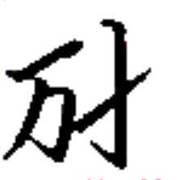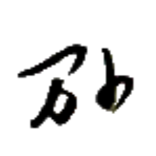
ワ·
【哇】
[間投詞]
わあ、おお
軽い驚きを表す。
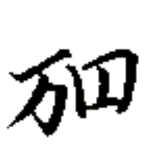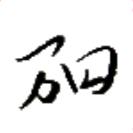
オー·
【哦】
[間投詞]
おお、ああ
感動を伴う驚きを表す。
平
【平】の「オウ→」とは顕著に発音が異なるため注意。
ヘゥン·
【啌】
[間投詞]
ああ、うん、へえ、ほう
軽い納得や同意を表す。
啌啌
ヘゥン·ヘゥン·
【啌啌】
[間投詞]
ふむふむ、はいはい、なるほど
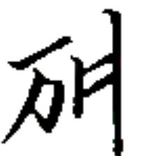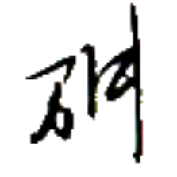
ロㇰ→
【笛】
[名詞]
笛、管楽器
笛琴
ロㇰ→リアー→
【笛琴】
[名詞]
音楽
笛声
ロㇰ→スオㇷ゚⤴
【笛声】
[名詞]
笛の音
琴笛鼓歌
リアー→ロㇰ→ブㇺ→シャウ→
【琴笛鼓歌】
[名詞]
弦楽器・管楽器・打楽器による伴奏がついた歌
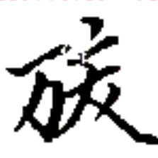
クアㇰ→
【㕮】
㕮㕮
クアㇰ→クアㇰ→
【㕮㕮】
[動詞]
咳をする、咳き込む
[間投詞]
（咳の音）
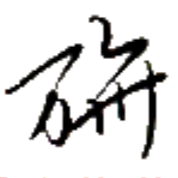
バー⤴
【汪】
言汪汪
チェㇷ゚→バー⤴バー⤴
【言汪汪】
[動詞]
犬が吠える
⇒ p.
噫
 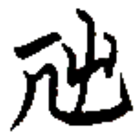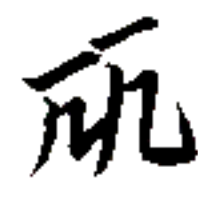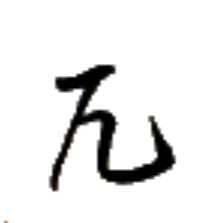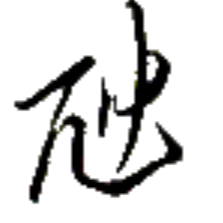
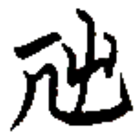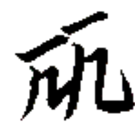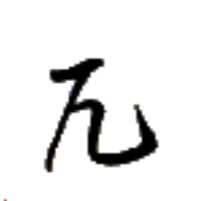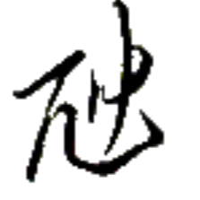 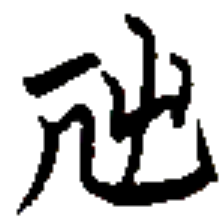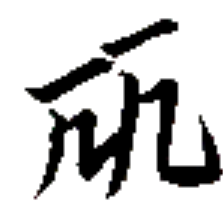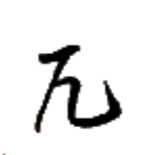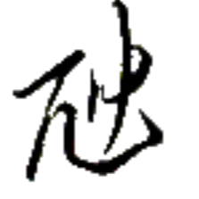
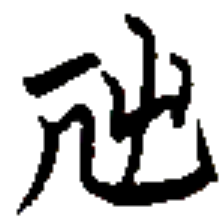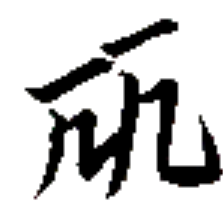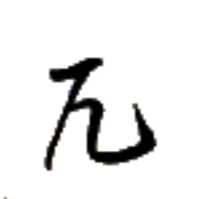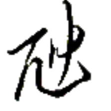


 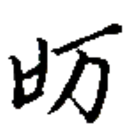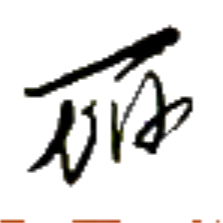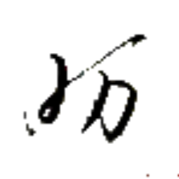
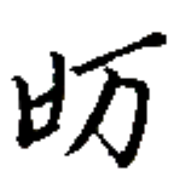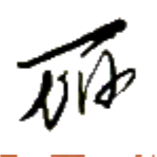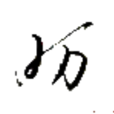


 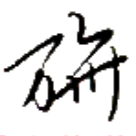
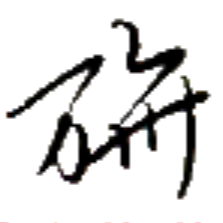